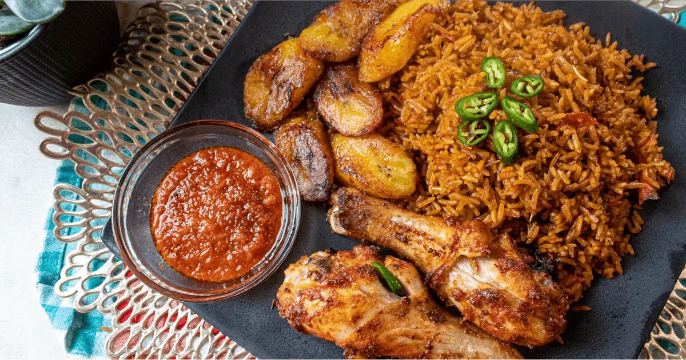
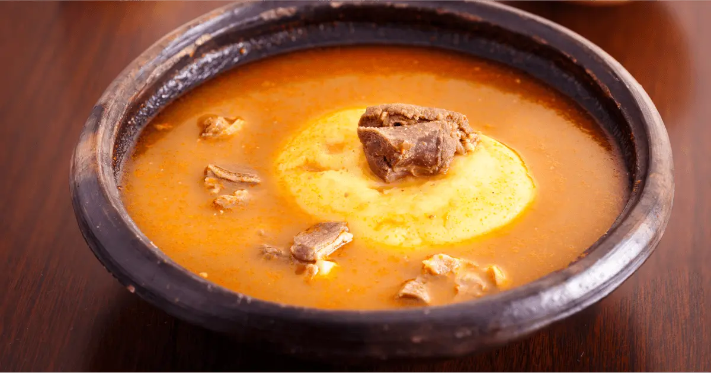
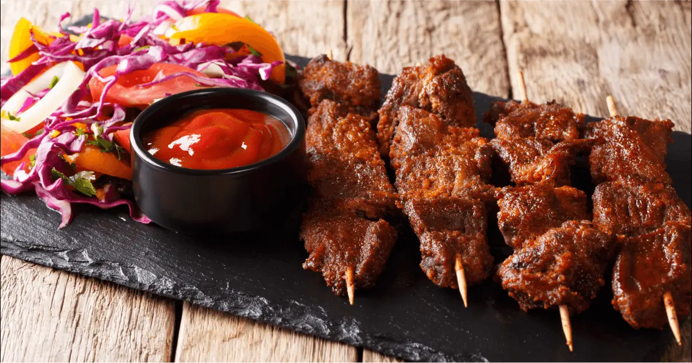
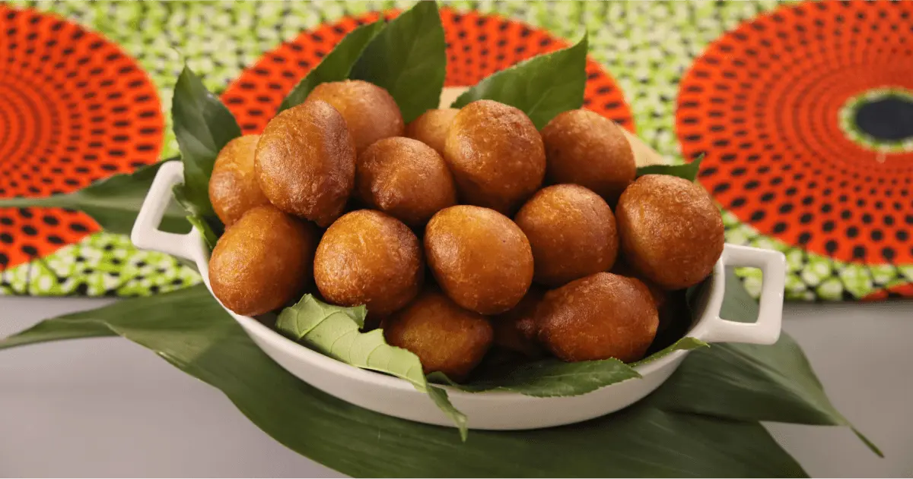
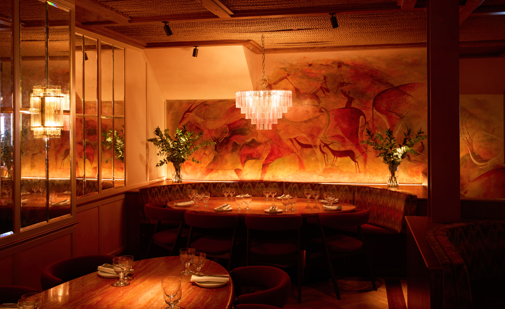

Inspired by cherished family recipes, served with warmth and love.
Chef's Selection

£14.99Smoky, slow-cooked tomato rice with a rich blend of West African spices, served with fried plantain.

£11.50A bold, aromatic broth loaded with tender goat meat and traditional Nigerian pepper soup spices.

£13.00Flame-grilled beef skewers coated in a spiced groundnut rub, served with sliced onions and tomatoes.

£6.50Light, golden deep-fried dough balls dusted with sugar — a beloved Nigerian street-food classic.

Our Story
At Chi & Oma, every meal begins with a memory. What started as a shared passion between childhood friends Chidera and Oma has grown into a space where Nigerian flavours come alive. Inspired by the kitchens they grew up in, they created a restaurant that brings the warmth, comfort and heart of a true Naija home to the city.
From smoky jollof to rich pepper soup, every dish is prepared with care, using trusted local and West African ingredients. Whether you’re joining us for a quiet meal or a celebration, we want you to leave feeling nourished, welcomed and connected.
Chi & Oma is more than food. It’s home.
Gallery
Your Thoughts